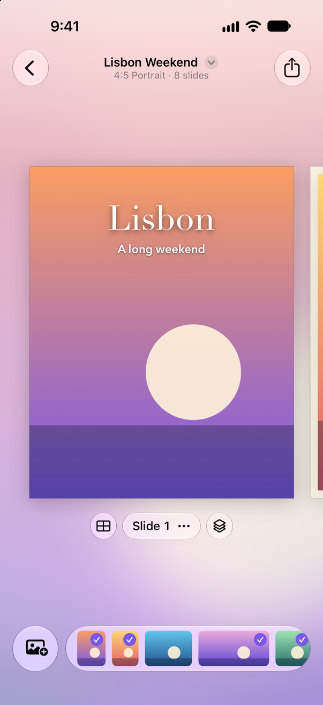
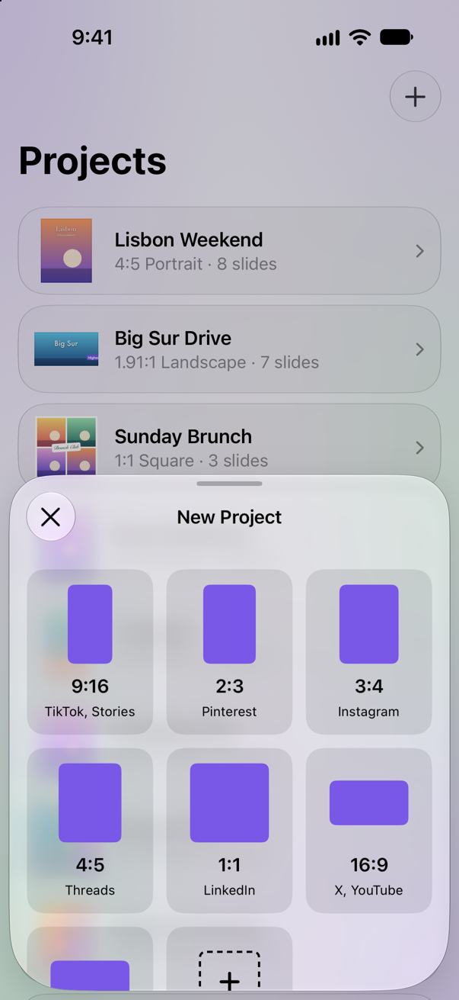
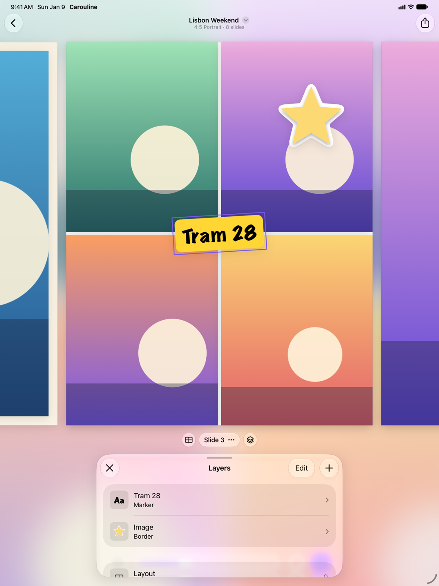
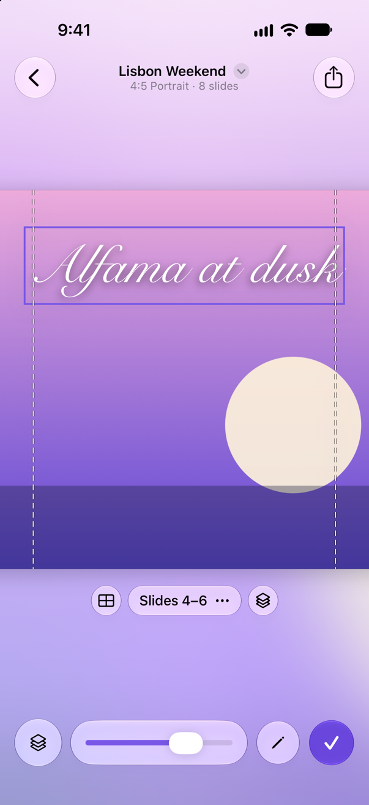
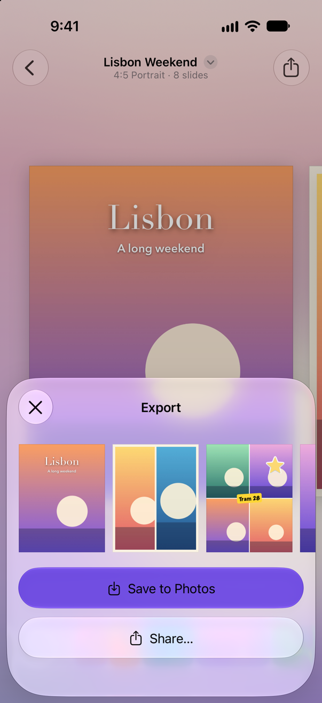

Carouline
Photo carousels, made on your iPhone or iPad. Pick a slide shape, lay out each slide with one to four photos or cut a panorama across several, then share the whole set at once.

Photo carousels, made on your iPhone or iPad. Pick a slide shape, lay out each slide with one to four photos or cut a panorama across several, then share the whole set at once.

Shapes
Start from a slide shape made for where you're posting, from 9:16 for TikTok and Stories to 3:4 for Instagram and 16:9 for YouTube, or set a ratio and export size of your own.

Layouts
Gather photos into a tray to look them over, then lay out each slide with one to four of them, or take them straight from the camera or your library. Layer text and photos on top, framed or cut out as stickers, with edges from torn paper to postage stamps.

Panoramas
Cut one wide photo across several slides as a panorama, so the carousel swipes like a single scene, and set text right across the seams.

Export
Save every slide to Photos, or share them all to any app that takes several images at once.
